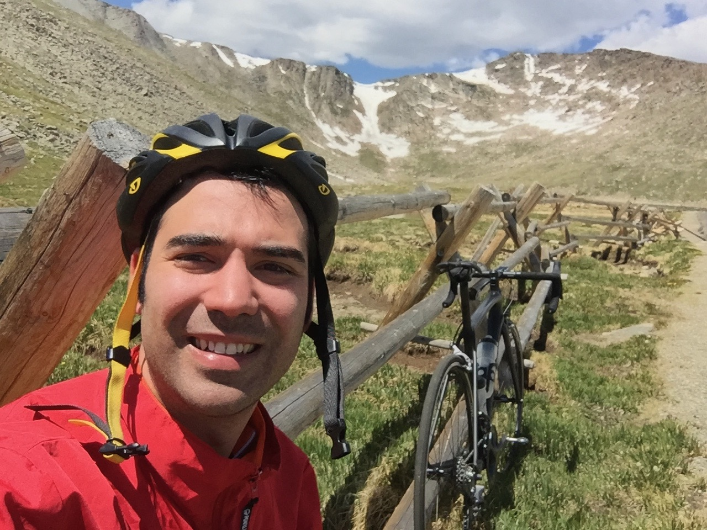

|
 |
Mert HidayetogluCoordinate Science Laboratory, 1308 W Main St, Urbana, IL 61801hidayet2 at illinois dot edu [Extended CV] [LinkedIn] [Google Scholar] [GitHub] |
Short Bio
Senior PhD candidate at with research at the intersection of large-scale applications, high-performance computing, and software systems.
Positioned thesis work on efficient communications for distributed sparse computations on multi-GPU node architecture.
In his free time, Mert likes to ride bikes.
Recent News
- Sep 2020: Petascale XCT work is named the best paper and best student paper finalist at SC20.
- Aug 2020: HPEC Paper won MIT/Amazon/IEEE Graph Challenge on sparse deep neural network inference.
- Apr 2020: MemXCT work is chosen as the SC20 reproducibility challenge benchmark. See blog here.
- Apr 2020: Presented recent research at alma seminar.
- Aug 2019: Our work on efficient GPU algorithm on higher-order stencil work won the best paper award at HPCC.
- June 2019: Teaching at PUMPS for Barcelona Supercomputing Center.
- May 2019: Internship at IBM Research Cambridge, MA starts.
- Mar 2019: Received Paul D. Coleman Outstanding Research Award.
- May 2018: Starting at Argonne National Laboratory as Givens Associate.
- May 2018: IPDPS PhD forum poster won the outstanding poster presentation award.
- Mar 2018: Recieved Dan Vivoli Endowed Fellowship.
- Dec 2017: Presented inverse multiple-scattering imaging at Argonne Seminar.
- June 2017: Teaching at PUMPS for Barcelona Supercomputing Center.
- May 2017: Named Computational Science and Engineering Fellow: CSE Fellowsip.
- May 2017: Received the last Professor Kung Chie Yeh Endowed Fellowship.
Last modified: .